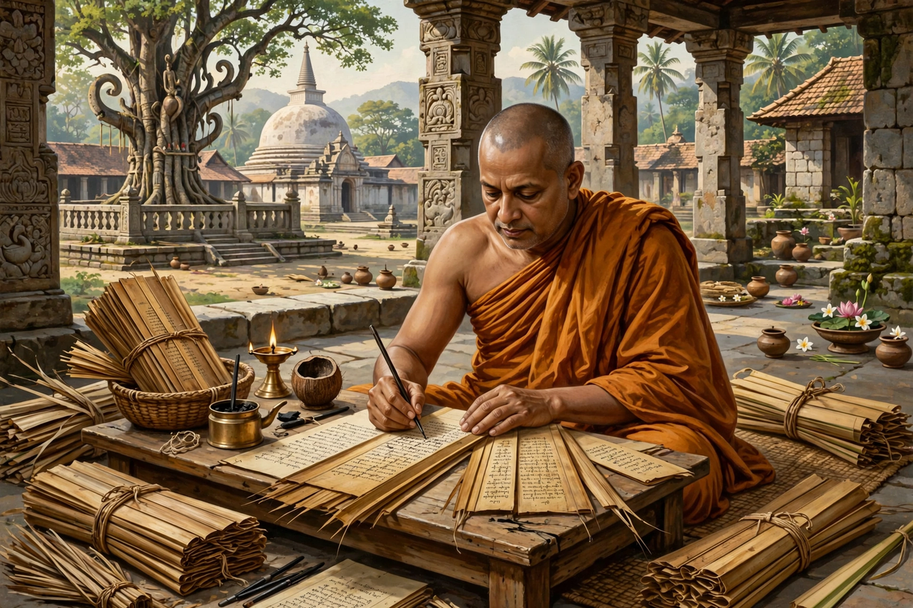

Buddhaghosa (Pali: Buddhaghosa, "Voice of the Buddha") was a 5th-century Indian Theravada Buddhist commentator, translator, and scholar. He is best known for his massive commentary and systematisation, the Visuddhimagga ("The Path of Purification"), which remains the foremost text on Theravada doctrine and meditation practice outside the Pali Canon itself. His work profoundly shaped the Theravada tradition in Sri Lanka and Southeast Asia.
| Buddhaghosa | |
|---|---|
 | |
| Era | 5th century CE |
| Region | India; Anuradhapura, Sri Lanka |
| School | Theravada Buddhism |
| Notable work | Visuddhimagga |
Traditional accounts, such as the Sri Lankan chronicle Mahāvaṃsa and the later biography Buddhaghosuppatti, say Buddhaghosa was born near Bodh Gaya in India into a Brahmin family, mastered the Vedas, and converted to Buddhism after being bested in debate by the monk Revata. He travelled to the Mahāvihāra monastery at Anuradhapura in Sri Lanka to translate the Sinhalese commentaries on the scriptures into Pali. The historicity of many biographical details is uncertain.
His greatest work, the Visuddhimagga, organises the path to liberation into three parts — virtue (sīla), concentration (samādhi), and wisdom (paññā) — expounding the forty meditation subjects and the stages of insight. Buddhaghosa is also credited with commentaries (aṭṭhakathā) on most of the Pali Canon, including the Samantapāsādikā on the Vinaya and the Sumaṅgalavilāsinī on the Dīgha Nikāya, though scholars debate how much of the attributed corpus is his alone.
By rendering the Sinhala commentarial tradition into Pali, Buddhaghosa made it the authoritative interpretation across the Theravada world; his systematisation of Abhidhamma and meditation categories became normative in Burma (Myanmar), Thailand, Cambodia, and Laos.
From Wikipedia, the free encyclopedia (recreated from memory).